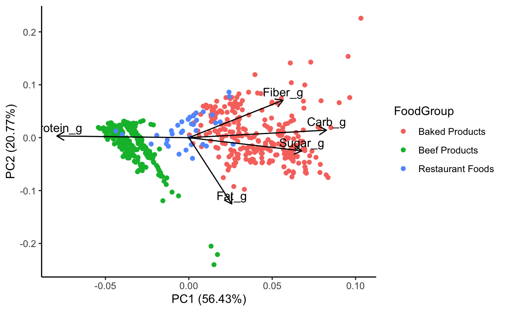
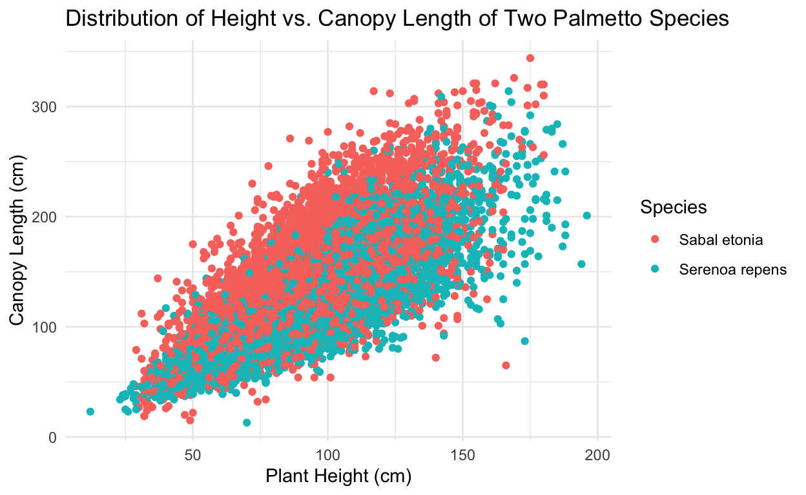
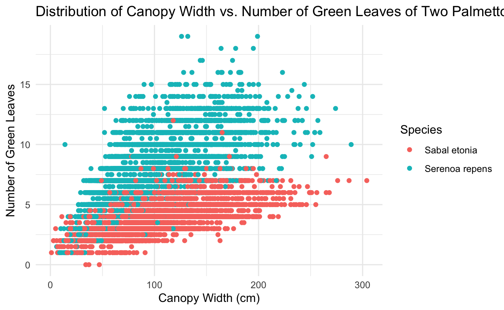
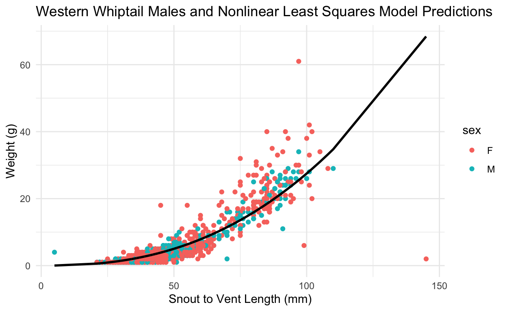
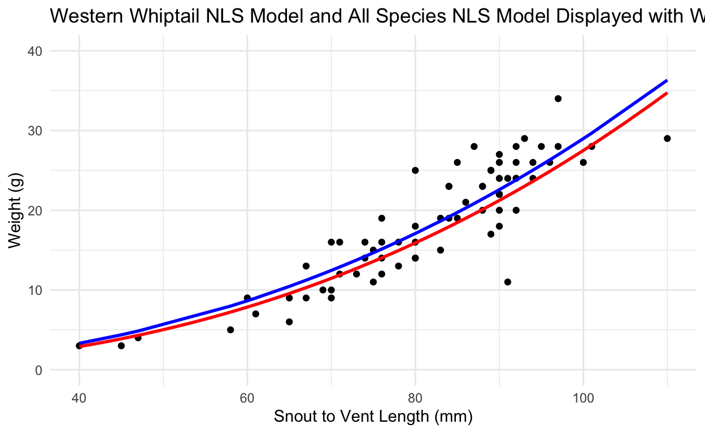

Projects Completed
This script uses principal components analysis to analyze nutrient information for raw fruits and vegetables from the USDA National Nutrient Database (FoodDataCentral). Principal components analysis is an ordination method allowing us to understand as much about our multivariate data as possible in a simplified number of dimensions. Here, I’ll use the nutrients data from the USDA to explore variable relationships and clustering. I will only use the measurements that are in grams (protein, fat, carbohydrates, sugar, fiber), and I will only look at restaurant foods, baked products, and beef products.
Data citation: United States Department of Agriculture. https://fdc.nal.usda.gov/index.html
autoplot(nutrients_pca,
data = nutrients_filter,
loadings = TRUE,
colour = 'FoodGroup', # colour needs to be British spelling
loadings.label = TRUE,
loadings.colour = "black",
loadings.label.colour = "black",
loadings.label.vjust = -0.5) +
theme_classic()

Figure 1. PCA biplot between PC1 and PC2 when looking at protein, fiber, carbohydrates, sugar, and fat of baked products, beef products, and restaurant foods.
This analysis will look at the relationship between oxygen saturation of seawater off California’s coast and several physical and chemical variables including oxygen saturation, water temperature, water salinity, water depth, phosphate concentration, and nitrite concentrations.
Data citation: CalCOFI data are available for use without restriction. Data downloaded from https://calcofi.org/ccdata.html. Accessed 1/10/2022.
Model 1 is oxygen saturation as a function of water temperature, salinity, and phosphate concentration.
Model 2 is oxygen saturation as a function of water temperature, salinity, phosphate concentration, and depth.
A third model has also been added. Model 3 is oxygen saturation as a function of water temperature, salinity, phosphate concentration, nitrite concentration, and depth.
AIC = Akaike Information Criterion
Model with the lowest AIC is the preferred model. Ideally, the best model is lower than the next best model by at least 2.0. A difference of 2 indicates a significant difference in model fit.
AICc(mdl1) # AICc() corrects for sample size
[1] 619.0251AICc(mdl2)
[1] 616.6048AICc(mdl3)
[1] 613.5962
Model selection based on AICc:
K AICc Delta_AICc AICcWt Cum.Wt LL
Mod3 7 613.60 0.00 0.78 0.78 -299.19
Mod2 6 616.60 3.01 0.17 0.95 -301.85
Mod1 5 619.03 5.43 0.05 1.00 -304.19AIC of model 1 = 619.0251
AIC of model 2 = 616.6048
AIC of model 3 = 613.5962
The AIC of model 1 > model 2 > model 3.
Model 3 is lower than model 2 by 3.01 and lower than model 1 by 5.43, so since it is lower by at least 2, model 3 is the preferred model.
Model 3 is the preferred model via the AIC method.
Root-mean-square error is the scoring method.
folds <- 10 # number of folds
fold_vec <- rep(1:folds, length.out = nrow(seawater_clean)) # fold vector is repeating over each fold
table(fold_vec)
fold_vec
1 2 3 4 5 6 7 8 9 10
10 10 10 10 10 10 10 10 10 10 Create root-mean-square error function.
Calculate over all folds and take the average.
rmse_df <- data.frame() # Create a blank data frame.
# Below is a for loop - loops through all 10 folds.
for(i in 1:folds) {
kfold_test_df <-seawater_fold %>%
filter(group == i) # in group i
kfold_train_df <-seawater_fold %>%
filter(group != i) # not in group i
kfold_mdl1 <- lm(f1, data = kfold_train_df)
kfold_mdl2 <- lm(f2, data = kfold_train_df)
kfold_mdl3 <- lm(f3, data = kfold_train_df)
kfold_pred_df <- kfold_test_df %>%
mutate(mdl1 = predict(kfold_mdl1, kfold_test_df),
mdl2 = predict(kfold_mdl2, .), # the period is a shortcut that says you are predicting on the data frame
mdl3 = predict(kfold_mdl3, .))
kfold_rmse <- kfold_pred_df %>%
summarize(rmse_mdl1 = calc_rmse(mdl1, o2sat),
rmse_mdl2 = calc_rmse(mdl2, o2sat),
rmse_mdl3 = calc_rmse(mdl3, o2sat))
#Store the last chunk above by combining with the blank data frame from above.
rmse_df <- bind_rows(rmse_df, kfold_rmse)
}
rmse_df %>%
summarize(mean_rmse_mdl1 = mean(rmse_mdl1),
mean_rmse_mdl2 = mean(rmse_mdl2),
mean_rmse_mdl3 = mean(rmse_mdl3))
mean_rmse_mdl1 mean_rmse_mdl2 mean_rmse_mdl3
1 4.976605 4.876322 4.795063Model 1 RMSE = 4.976605
Model 2 RMSE = 4.876322
Model 3 RMSE = 4.795063
Model 3 has the lowest root-mean-square error meaning it has the lowest error when predicting data.
Model 3 is the preferred model via the k-fold cross validation method using RMSE scoring.
Both AIC and k-fold cross validation using root-mean-square error as the scoring method indicate model 3 to be the preferred model.
Call:
lm(formula = f3, data = seawater_clean)
Residuals:
Min 1Q Median 3Q Max
-25.3273 -2.3744 0.0158 2.3748 19.4893
Coefficients:
Estimate Std. Error t value Pr(>|t|)
(Intercept) 149.93538 93.39120 1.605 0.1117
temp -0.46764 0.41548 -1.126 0.2632
salinity -0.78711 2.92993 -0.269 0.7888
phosphate -37.37466 2.45287 -15.237 <2e-16 ***
nitrite 14.66437 6.46880 2.267 0.0257 *
depth -0.01789 0.01591 -1.124 0.2637
---
Signif. codes: 0 '***' 0.001 '**' 0.01 '*' 0.05 '.' 0.1 ' ' 1
Residual standard error: 4.972 on 94 degrees of freedom
Multiple R-squared: 0.9597, Adjusted R-squared: 0.9575
F-statistic: 447.1 on 5 and 94 DF, p-value: < 2.2e-16\[ \begin{aligned} \operatorname{o2sat} &= \alpha + \beta_{1}(\operatorname{temp}) + \beta_{2}(\operatorname{salinity}) + \beta_{3}(\operatorname{phosphate})\ + \\ &\quad \beta_{4}(\operatorname{nitrite}) + \beta_{5}(\operatorname{depth}) + \epsilon \end{aligned} \]
Where:
o2sat = oxygen saturation
temp = water temperature in degrees Celsius
salinity = salinity of the water
phosphate = phosphate concentration in micro moles per liter
nitrite = nitrite concentration in micro moles per liter
depth = depth in meters
\[ \begin{aligned} \operatorname{\widehat{o2sat}} &= 149.94 - 0.47(\operatorname{temp}) - 0.79(\operatorname{salinity}) - 37.37(\operatorname{phosphate})\ + \\ &\quad 14.66(\operatorname{nitrite}) - 0.02(\operatorname{depth}) \end{aligned} \]
This script uses variables such as plant height, canopy length, canopy width, and the number of green leaves to classify whether palmettos are of species Serenoa repens or Sabal etonia. Binary logistic regression is used to test feasibility.
Data was collected from 1981 to 2017 in south-central Florida. It includes information regarding year, plant type, species, site, habitat, treatment, survival, height, canopy length, canopy width, number of green leaves, scape, new leaves, canopy, if long, comments, and biomass.
Data citation: Abrahamson, W.G. 2019. Survival, growth and biomass estimates of two dominant palmetto species of south-central Florida from 1981 - 2017, ongoing at 5-year intervals ver 1. Environmental Data Initiative. https://doi.org/10.6073/pasta/f2f96ec76fbbd4b9db431c79a770c4d5
Select columns for use in the analysis, change values in the species column to species names, and convert the species column to a factor class.
palmetto_clean <- palmetto %>% # Clean the data table
select(species, height:green_lvs) %>% # Select only the columns I need for analysis, the colon means "all the way over to"
drop_na()
# Change the values 1 and 2 in the species column to actual species names. 1 = Serenoa repens, 2 = Sabal etonia
palmetto_clean$species <- ifelse(palmetto_clean$species==1,'Serenoa repens','Sabal etonia')
# Convert the species column to a factor class
palmetto_clean$species <- as.factor(palmetto_clean$species)
# levels(palmetto_clean$species) in the console revealed Sabal etonia is factor level 0 and Serenoa repens is factor level 1
Differences in height, canopy length, canopy width, and green leaves for Serenoa repens or Sabal etonia.
ggplot(data = palmetto_clean, aes(x = height, y = length)) +
geom_point(aes(color = species)) +
labs(title = 'Distribution of Height vs. Canopy Length of Two Palmetto Species',
x = 'Plant Height (cm)',
y = 'Canopy Length (cm)',
color = "Species") + # title, axis labels, and legend title
theme_minimal() # sets the theme of the graph - for visual purposes

Figure 1. The relationship between canopy length (cm) and maximum plant height (cm) is shown for each species. Sabal etonia is shown in red. Serenoa repens is shown in blue.
ggplot(data = palmetto_clean, aes(x = width, y = green_lvs)) +
geom_point(aes(color = species)) +
labs(title = 'Distribution of Canopy Width vs. Number of Green Leaves of Two Palmetto Species',
x = 'Canopy Width (cm)',
y = 'Number of Green Leaves',
color = "Species") + # title, axis labels, and legend title
theme_minimal() # sets the theme of the graph - for visual purposes

Figure 2. The relationship between the number of green leaves and canopy width (cm) is shown for each species. Sabal etonia is shown in red. Serenoa repens is shown in blue.
Based on these plots, the number of green leaves is the most likely variable to help classify the species correctly. It shows the most difference between species. Canopy width, plant height, and canopy length showed similar trends between species.
# Store formulas
f1 <- species ~ height + length + width + green_lvs
f2 <- species ~ height + width + green_lvs
# Binomial logistic regression for model 1 which includes height + length + width + green_lvs.
palm_blr1 <- glm(formula = f1,
data = palmetto_clean,
family = 'binomial')
# Binomial logistic regression for model 2 which includes height + width + green_lvs and does not include length.
palm_blr2 <- glm(formula = f2,
data = palmetto_clean,
family = 'binomial')
Compare the models using AICc
Model selection based on AICc:
K AICc Delta_AICc AICcWt Cum.Wt LL
Mod1 5 5194.57 0.00 1 1 -2592.28
Mod2 4 5987.48 792.91 0 1 -2989.74Compare with a 10-fold cross-validation, using prediction accuracy as our metric.
# Using `caret` ("**C**lassification **A**nd **RE**gression **T**raining"):
set.seed(123)
# tr_ctrl <- trainControl(method = "cv", number = 10)
tr_ctrl <- trainControl(method = "repeatedcv", number = 10, repeats = 10)
# Train the model
model1 <- train(f1, data = palmetto_clean,
method = "glm", family = 'binomial',
trControl = tr_ctrl)
model2 <- train(f2, data = palmetto_clean,
method = "glm", family = 'binomial',
trControl = tr_ctrl)
Model 1 (92% accurate) is more accurate than model 2 (90% accurate) according to 10-fold cross validation.
Based on both AIC values and 10-fold cross validation, model 1 is the better model.
final_mdl <- glm(formula = f1,
data = palmetto_clean,
family = 'binomial')
Table 1. Model 1 binary logistic regression model results.
### Get a tidy version w/ broom:
final_mdl_tidy <- broom::tidy(final_mdl)
setnames(final_mdl_tidy, old=c("term","estimate", "std.error", "statistic", "p.value"), new=c("Term","Estimate", "Standard Error", "z-value", "p-value"))
kable(final_mdl_tidy)
| Term | Estimate | Standard Error | z-value | p-value |
|---|---|---|---|---|
| (Intercept) | -3.2266851 | 0.1420708 | -22.71180 | 0 |
| height | 0.0292173 | 0.0023061 | 12.66984 | 0 |
| length | -0.0458233 | 0.0018661 | -24.55600 | 0 |
| width | -0.0394434 | 0.0021000 | -18.78227 | 0 |
| green_lvs | 1.9084747 | 0.0388634 | 49.10728 | 0 |
The model is predicting the likelihood that the species is a Serenoa repens because the factor level of Serenoa repens is 1.
All variables are statistically significant.
Higher length and width would be less likely to be Serenoa repens because the value is negative.
Higher height and more green leaves would be more likely to be a Serenoa repens because the value is positive. This makes sense when looking at graphs above.
Table 2. Evaluation of how successfully this model would “classify” a plant as the correct species, using a 50% cutoff.
blr1_fitted <- palm_blr1 %>% # fitted column reports the probability that an individual is a Serenoa repens
broom::augment(type.predict = "response") %>% # instead of taking the log odds we are taking the odds and converting them into a probability
mutate(predicted_species = ifelse(.fitted >= 0.5, "Serenoa repens", "Sabal etonia")) %>%
group_by(species) %>% # separate by species
summarize(number_correctly_identified = sum(species == predicted_species),
number_total = n()) %>% # number_total is needed to identify percent correctly identified
mutate(percent_correctly_identified = number_correctly_identified/number_total * 100) %>%
select(species, number_correctly_identified, percent_correctly_identified)
setnames(blr1_fitted, old=c("species","number_correctly_identified", "percent_correctly_identified"), new=c("Species","Number Correctly Identified", "Percent Correctly Identified"))
kable(blr1_fitted)
| Species | Number Correctly Identified | Percent Correctly Identified |
|---|---|---|
| Sabal etonia | 5701 | 92.62388 |
| Serenoa repens | 5548 | 90.77225 |
A binary logistic regression model using plant height, canopy length, canopy width and green leaves as predictor variables is better at predicting palmetto species (Serenoa repens and Sabal etonia) than a model using plant height, canopy width and the number of green leaves. The model correctly identified 5701 (92.62%) of Sabal etonia correctly and 5548 (90.77%) of Serenoa repens correctly.
This script uses non linear least squares to estimate parameters of a length to weight model for lizard populations in New Mexico.
Data was collected from 1989 to 2006 on 11 NPP study locations at the Jornada Basin LTER. The dataset includes information regarding species, sex, snout vent length, and weight.
Data citation: Lightfoot, D. and W.G. Whitford. 2020. Lizard pitfall trap data from 11 NPP study locations at the Jornada Basin LTER site, 1989-2006 ver 37. Environmental Data Initiative. https://doi.org/10.6073/pasta/4a6e258fb49c31e222ecbbcfd128967f
Snout length to weight model: W = a(SVL)^b
W = weight
SVL = snout to vent length
a & b = parameters that need to be fitted
calc_weight <- function(a, SV_length, b){
W = a*(SV_length)^b
return(W)
}
The model is exponential, so data will be log transformed and an OLS regression will be used to approximate parameters.
SV_length and weight are log transformed
guess_model <- lm(log_weight ~ log_length, data = lizard_log)
lizard_nls <- nls(weight ~ calc_weight(a, SV_length, b),
data = lizard,
start = list(a = exp(coefficients(guess_model)[1]), # starting values identified in OLS function above. a was found by taking the exponent of the intercept value.
b = coefficients(guess_model)[2]),
trace = TRUE)
17064.55 (3.24e-01): par = (0.0002085246 2.537119)
16502.11 (2.59e-01): par = (0.0002772028 2.477012)
15516.47 (5.68e-02): par = (0.0003473554 2.443989)
15466.89 (2.62e-03): par = (0.000337407 2.45569)
15466.81 (6.77e-04): par = (0.000342001 2.452585)
15466.80 (1.56e-04): par = (0.0003409034 2.453348)
15466.80 (3.81e-05): par = (0.0003411808 2.453161)
15466.80 (9.33e-06): par = (0.0003411133 2.453207)#tidy model output
lizard_nls_tidy <- broom::tidy(lizard_nls)
setnames(lizard_nls_tidy, old=c("term","estimate", "std.error", "statistic", "p.value"), new=c("Term","Estimate", "Standard Error", "z-value", "p-value")) # changes names of columns on table
kable(lizard_nls_tidy) # creates clean table
| Term | Estimate | Standard Error | z-value | p-value |
|---|---|---|---|---|
| a | 0.0003411 | 0.0000400 | 8.538421 | 0 |
| b | 2.4532065 | 0.0269791 | 90.930011 | 0 |
predict1 <- predict(lizard_nls)
all_sp_complete <- data.frame(lizard, predict1) # adds prediction column to original data table
ggplot(data = all_sp_complete, aes(x = SV_length, y = weight)) +
geom_point(aes(color = sex)) +
geom_line(aes(x = SV_length, y = predict1),
color = "black",
size = 1) +
labs(x = "Snout to Vent Length (mm)",
y = "Weight (g)",
title = "Western Whiptail Males and Nonlinear Least Squares Model Predictions") +
theme_minimal()

Figure 1. NLS model overlaid with lizard data separated by sex.
rmse_predict_all_sp <- all_sp_complete %>%
summarize(rmse_all_sp = calc_rmse(weight, predict1))
rmse_predict_all_sp
rmse_all_sp
1 2.790684ww_guess_model <- lm(log_weight ~ log_length, data = western_whiptails)
ww_nls <- nls(weight ~ calc_weight(a, SV_length, b), # compare weight to the calc_weight function
data = western_whiptails,
start = list(a = exp(coefficients(ww_guess_model)[1]),
b = coefficients(ww_guess_model)[2]),
trace = TRUE)
849.1572 (2.38e-01): par = (0.0001204877 2.698108)
845.6613 (2.27e-01): par = (0.0001330208 2.674996)
843.4176 (2.19e-01): par = (0.000145976 2.653427)
841.8629 (2.14e-01): par = (0.0001592699 2.633319)
840.6339 (2.09e-01): par = (0.0001728179 2.614592)
839.5079 (2.05e-01): par = (0.0001865362 2.597165)
838.3596 (2.00e-01): par = (0.0002003434 2.580958)
837.1280 (1.96e-01): par = (0.0002141623 2.565892)
835.7939 (1.91e-01): par = (0.0002279206 2.551894)
834.3628 (1.85e-01): par = (0.0002415522 2.538892)
832.8544 (1.80e-01): par = (0.0002549974 2.526816)
831.2942 (1.74e-01): par = (0.0002682034 2.515604)
830.9229 (1.72e-01): par = (0.0002940453 2.494784)
829.4806 (1.66e-01): par = (0.0003185494 2.476905)
827.3386 (1.57e-01): par = (0.0003414678 2.461569)
826.9172 (1.55e-01): par = (0.0003838388 2.435273)
822.7939 (1.37e-01): par = (0.0004187718 2.416406)
818.0645 (1.14e-01): par = (0.0004743039 2.389404)
809.0350 (4.10e-02): par = (0.0005336902 2.365838)
807.6757 (1.94e-04): par = (0.0005309859 2.368548)
807.6756 (1.74e-05): par = (0.0005316264 2.368276)
807.6756 (1.56e-06): par = (0.0005315662 2.368301)#tidy model output
ww_nls_tidy <- broom::tidy(ww_nls)
setnames(ww_nls_tidy, old=c("term","estimate", "std.error", "statistic", "p.value"), new=c("Term","Estimate", "Standard Error", "z-value", "p-value"))
kable(ww_nls_tidy)
| Term | Estimate | Standard Error | z-value | p-value |
|---|---|---|---|---|
| a | 0.0005316 | 0.0004288 | 1.239686 | 0.2192313 |
| b | 2.3683013 | 0.1800348 | 13.154689 | 0.0000000 |
predict <- predict(ww_nls)
ww_complete <- data.frame(western_whiptails, predict) # adds prediction column to original data table
rmse_ww
1 3.349286ggplot(data = ww_complete, aes(x = SV_length, y = weight)) +
xlim(40, 110) + # limit x axis SV_length values to min and max western whiptail SVL's for better visualization
ylim(0, 40) + # limit y axis weight values for better visualization
geom_point() + # display western whiptail male points
geom_line(aes(x = SV_length, y = predict), # add western whiptail NLS line
color = "blue",
size = 1) +
geom_line(data = all_sp_complete, aes(x = SV_length, y = predict1), # add all sp. NLS line
color = "red",
size = 1) +
labs(x = "Snout to Vent Length (mm)",
y = "Weight (g)",
title = "Western Whiptail NLS Model and All Species NLS Model Displayed with Western Whiptail Male Data Points") +
theme_minimal()

Figure 2. NLS model for all species (red) and NLS model for western whiptail lizards (blue) plotted against male western whiptail datapoints. The RMSE for the all species NLS is 2.790684. The RMSE for western whiptail NLS is 3.349286. The model for all species should be used because it has a lower RMSE and fits the data better.